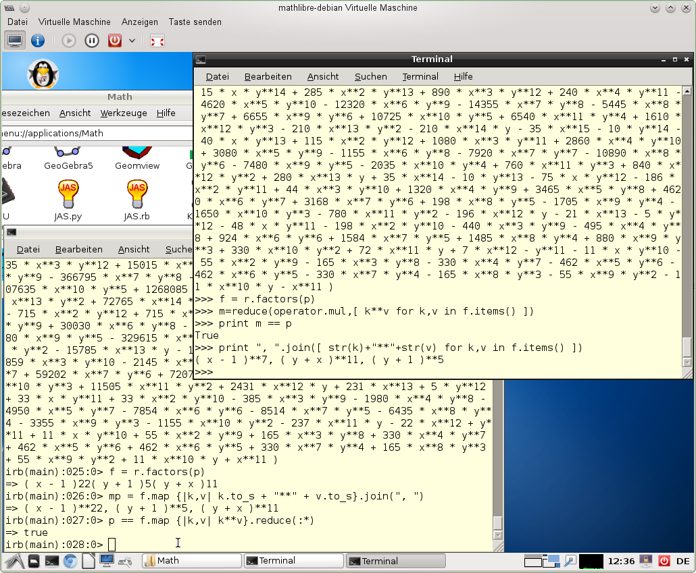

This document contains first information on how-to use the interactive
scripting of the JAS project. It can be used via the Java Python
interpreter jython, or the Java Ruby interpreter
jruby or the jruby Android App Ruboto-IRB.
The usage of JAS as an ordinary Java library, adding
jas.jar to the classpath and creating and using objects
from JAS classes, is introduced in the API
guide.
JAS can be started with the script "jas" in the JAS home
directory. By default the JRuby interactive shell ist used. For the
Jython shell use "jas -py". When started from a desktop,
like MathLibre,
the shells will look as in the following picture. The upper right
terminal shows a Jython shell and the lower left terminal shows a JRuby
shell.

JAS jython and jruby interface in MathLibre
As first example we will discus how to compute a Groebner base with
jruby. The jruby script will be placed into a file, e.g.
getstart-gb.rb.
This script file is executed by calling
jruby getstart-gb.rb
If you start jruby (or jas -rb) without a
file name, then an interactive shell is opened and you can type
commands and expressions as desired.
The script file first imports the desired mathematical classes from
the jas.rb script which does all interfacing to the Java
library. For the Rdoc of it see here.
require "examples/jas"
In our case we need PolyRing to define an appropriate polynomial ring
and later Ideal to define sets of polynomials and have methods to
compute Groebner bases.
PolyRing takes arguments for required definitions
of the polynomial ring: the type of the coefficient ring, the names of
the used variables and the desired term order.
r = PolyRing.new( QQ(), "B,S,T,Z,P,W", PolyRing.lex)
The ring definition is stored in the variable r for later use.
The string "QQ()" defines the coefficient ring
to be the rational numbers,
the polynomial ring consists of the variables B, S, T, Z, P, W
and the term order PolyRing.lex means a lexicographic term order.
For some historical reason the term order orders the variables as
B < S < T < Z < P < W and not the other way.
I.e. the highest or largest variable is always on the right of the list of
variables not on the left as in some other algebra systems.
With
puts "PolyRing: " + r.to_s
you can print out the ring definition.
r.to_s is the usual Ruby way of producing string representations
of objects, which in our case calls the respective Java method
toScript() of the JAS object. It produces
PolyRing: PolyRing.new(QQ(),"B,S,T,Z,P,W",PolyRing.lex)
i.e. the same expression as defined above. In general the string from
r.to_s of an JAS object can be used via cut-and-past as
new input.
Next we need to enter the generating polynomials for the ideal.
We do this in three steps,
first define the Ruby variables for the polynomial ring,
next define the polynomials
and then the creation of the ideal using the ring definition from before
and the polynomial list.
one,B,S,T,Z,P,W = r.gens()Small letter variables for polynomials are defined automatically but because of Ruby handling capital letter variables as constant they must be defined by hand. The method
r.gens() returns a list
of all generators (variables and values) of the polynomial ring.
ff = [ 45 * P + 35 * S - 165 * B - 36, 35 * P + 40 * Z + 25 * T - 27 * S, 15 * W + 25 * S * P + 30 * Z - 18 * T - 165 * B**2, - 9 * W + 15 * T * P + 20 * S * Z, P * W + 2 * T * Z - 11 * B**3, 99 * W - 11 * B * S + 3 * B**2, B**2 + 33/50 * B + 2673/10000 ];
The polynomial list can be generated by any means Ruby allows for
polynomial expressions.
In our example we use Ruby brackets [ ... ] for the creation of the list.
The polynomials in the list are delimited by commas, and may be enclosed in parentheses.
The syntax for polynomials is the Ruby expression syntax including
literals from the coefficient ring QQ(), variables and
operators +, -, *, ** (for summation, subtraction, multiplication,
and exponentiation).
The ideal is then defined with
f = r.ideal( "", ff )
It is contained the the polynomial ring r by construction and
consists of the polynomials from the list ff, the first
parameter is the empty string. Ideals can be printed with
puts "Ideal: " + f.to_s
In this example it produces the following output.
Ideal: SimIdeal.new(PolyRing.new(QQ(),"B,S,T,Z,P,W",PolyRing.lex),
"",[( B**2 + 33/50 * B + 2673/10000 ),
( 45 * P + 35 * S - 165 * B - 36 ),
( 35 * P + 40 * Z + 25 * T - 27 * S ),
( 15 * W + 25 * S * P + 30 * Z - 18 * T - 165 * B**2 ),
( ( -9 ) * W + 15 * T * P + 20 * S * Z ),
( 99 * W - 11 * B * S + 3 * B**2 ),
( P * W + 2 * T * Z - 11 * B**3 )])
The polynomial terms are now sorted with respect to the lexicographical term order. The highest term is first in a polynomial. Also the polynomials are sorted with respect to the term order, but with smallest polynomial first in the list. Finaly we can go to the computation of the Groebner basis of this ideal.
g = f.GB()
The ideal f has a method GB() which
computes the Groebner base. The computed Groebner base is stored
in the variable g which is also an ideal.
It can be printed in the same was as the ideal f
puts "Groebner base: " + g.to_s
The output first shows the output from calling the GB() method
and the the ideal basis.
sequential(field) GB executed in 37 ms
Groebner base: SimIdeal.new(PolyRing.new(QQ(),"B,S,T,Z,P,W",PolyRing.lex),
"",[( B**2 + 33/50 * B + 2673/10000 ),
( S - 5/2 * B - 9/200 ),
( T - 37/15 * B + 27/250 ),
( Z + 49/36 * B + 1143/2000 ),
( P - 31/18 * B - 153/200 ),
( W + 19/120 * B + 1323/20000 )])
The Groebner base was computed with the sequential algorithm or polynomial rings over fields in 37 ms and consists of six polynomials. The polynomials are now monic, i.e. the leading coefficient is 1 and omitted during print out. This concludes the first getting started section.
The jruby and the jython interface to the JAS library constain the
following classes. The class and method names are almost identical,
except where name clashes with scripting language occur,
e.g. Ideal in jython, but SimIdeal in jruby.
The class constructors in Ruby are used with the .new()
method and in Python the class name is use like a function name. For
example the construction of a polynomial ring is done in Ruby by
PolyRing.new(...) and in Python by
PolyRing(...).
For the Rdoc of them see here and
for the Epydoc of them see here.
PolyRing, Ideal/SimIdeal
and ParamIdeal
define polynomial rings, ideals and ideals over rings with coefficient parameters.
Ideal has methods for sequential, parallel and distributed
Groebner bases computation, for example
GB(), isGB(),
parGB(), distGB(),
NF() and intersect().
ParamIdeal has methods for comprehensive
Groebner bases computation, for example
CGB(), CGBsystem(), regularGB(),
SolvPolyRing and SolvableIdeal/SolvIdeal
define solvable polynomial rings and left, right and two-sided ideals.
SolvableIdeal has methods for left, right and two-sided
Groebner bases computation, e.g.
leftGB(), rightGB(), twosidedGB(),
intersect().
Module and SubModule
define modules over polynomial rings and sub modules.
Module has a method for sequential Groebner bases computation,
e.g. GB().
SolvableModule and SolvableSubModule
define modules over solvable polynomial rings and sub modules.
SolvableModule has methods for left, right and two-sided
Groebner bases computation, e.g.
leftGB(), rightGB(), twosidedGB().
Ruby has support for rational numbers, so a literal, like
2/3, is recognized as rational number 2/3. Python has no
support for rational number literals and 2/3 is
recognized as interger division, resulting in the integer
0 (zero). To allow rational numbers in JAS, the Python
tuple or list notation must be used to express rational numbers, so
(2,3) is recognized as rational number 2/3.
For example in the construction of Legendre polynomials a
rational number r = 1/n appears.
As tuple literal it is written (1,n) and
as list literal it can be written as [1,n].
p = (2*n-1) * x * P[n-1] - (n-1) * P[n-2]; r = (1,n); # no rational numbers in Python, use tuple notation p = r * p;
In the same way complex rational numbers can be written as nested
tuples. For example 1/n + 1/2 i can be written as
((1,n),(1,2)). If the second list element is omited it is
asumed to be one as rational number and zero as complex number. To
avoid ambiguities use a trailing comma, as in ((1,2),).
The JAS application uses the Ruboto-IRB Android application. Ruboto provides an jruby scripting interpreter together with an editor application. The Ruboto App is enhanced with the JAS jruby interface and the JAS Java classes.
For the Android app the main screen with the "trinks.rb" example and its output looks as follows.
The JAS jruby interface on Android has the same functionality as the general JAS jruby scripting interface (only some functionality of the power series is not avaliable).
In this section we summarize some mathematical constructions which are possible with JAS: real root computation, power series and non-commutative polynomial rings.
Besides the computation of Gröbner bases JAS is able to use them to solve various other problems. In this sub-section we present the computation of real roots of systems of (algebraic) equations. When the system of equations has only finitely many real roots, such systems define so called zero dimensional ideals, they can be computed (using jython) as follows.
r = PolyRing(QQ(),"x,y,z",PolyRing.lex); print "Ring: " + str(r); print; [one,x,y,z] = r.gens(); # is also automatic f1 = (x**2 - 5)*(x**2 - 3)**2; f2 = y**2 - 3; f3 = z**3 - x * y; F = r.ideal( list=[f1,f2,f3] ); R = F.realRoots(); F.realRootsPrint()
In the above example we compute the real roots of the equations
defined by the polynomials f1, f2, f3. First we define
the polynomial ring and then construct the ideal F from
the given polynomials. The method F.realRoots() computes
the real roots and method F.realRootsPrint() prints a
decimal approximation of tuples of real roots. The output of the last
method call looks as follows.
[-1.7320508076809346675872802734375, -1.7320508076809346675872802734375, 1.4422495705075562000274658203125] [1.7320508076809346675872802734375, 1.7320508076809346675872802734375, 1.4422495705075562000274658203125] [1.7320508076809346675872802734375, -1.7320508076809346675872802734375, -1.4422495705075562000274658203125] [-1.7320508076809346675872802734375, 1.7320508076809346675872802734375, -1.4422495705075562000274658203125] [0.50401716955821029841899871826171875, 2.236067977384664118289947509765625, -1.7320508076809346675872802734375, -1.5704178023152053356170654296875] [-0.50401716955821029841899871826171875, -2.236067977384664118289947509765625, 1.7320508076809346675872802734375, -1.5704178023152053356170654296875] [-3.96811878503649495542049407958984375, -2.236067977384664118289947509765625, -1.7320508076809346675872802734375, 1.5704178023152053356170654296875] [3.96811878503649495542049407958984375, 2.236067977384664118289947509765625, 1.7320508076809346675872802734375, 1.5704178023152053356170654296875]
The roots in the tuples [-1.732..., -1.732..., 1.442...] correspond to the roots in
the variables [x, y, z]. The last four tuples have four
entries [0.504..., 2.236..., -1.732..., -1.570...], where the first entry
stems from an internal field extension, which was needed to correctly
identify the roots of the ideal and are to be ignored. That is the
tuple [2.236..., -1.732..., -1.570...] without the first entry is
a real root of the ideal. That is, the decimal approximation of the
real roots are the following 8 tuples.
[-1.73205..., -1.73205..., 1.44224...] [ 1.73205..., 1.73205..., 1.44224...] [ 1.73205..., -1.73205..., -1.44224...] [-1.73205..., 1.73205..., -1.44224...] [ 2.23606..., -1.73205..., -1.57041...] [-2.23606..., 1.73205..., -1.57041...] [-2.23606..., -1.73205..., 1.57041...] [ 2.23606..., 1.73205..., 1.57041...]
More details and further examples can be found in the jython file
0dim_real_roots.py.
Univariate power series can be constructed via the
SeriesRing class and an multivariate power series with
the MultiSeriesRing class. There are short cut methods
PS(coeff, name, truncate, function) and
MPS(coeff, names, truncate, function) to construct a
power series with a given coefficient generator 'function'.
In the following example (using jython) we create a new power series ring
pr in the variable y over the rational numbers.
The creation of power series is done in the same way as
polynomials are created. There are additional methods like
r.exp() or r.sin() to create the
exponential power series or the power series for the sinus function.
pr = SeriesRing("Q(y)");
print "pr:", pr;
one = pr.one();
r1 = pr.random(4);
r2 = pr.random(4);
print "one:", one;
print "r1:", r1;
print "r2:", r2;
r4 = r1 * r2 + one;
e = pr.exp();
r5 = r1 * r2 + e;
print "e:", e;
print "r4:", r4;
print "r5:", r5;
Once power series are created, for example
r1, r2, e above, it is possible to use
arithmetic operators to built expressions of power series like
'r1 * r2 + one' or 'r1 * r2 + e'.
pr: PS(QQ(),"y",11)
one: 1
r1: (13,5) - (14,5) * y**3 - y**4 + 14 * y**5 - (12,7) * y**6 - 4 * y**7 - (9,14) * y**8 + 3 * y**9 + (1,15) * y**10
r2: - (9,16) * y + (5,6) * y**3 + (2,3) * y**5 + (5,6) * y**9 + (5,2) * y**10
e: 1 + y + (1,2) * y**2 + (1,6) * y**3 + (1,24) * y**4 + (1,120) * y**5 + (1,720) * y**6 + (1,5040) * y**7 + (1,40320) * y**8
+ (1,362880) * y**9 + (1,3628800) * y**10
r4: 1 - (117,80) * y + (13,6) * y**3 + (63,40) * y**4 + (551,240) * y**5 - (245,24) * y**6 + (11,84) * y**7 + (241,20) * y**8 + (97,224) * y**9 + (173,16) * y**10
r5: 1 - (37,80) * y + (1,2) * y**2 + (7,3) * y**3 + (97,60) * y**4 + (553,240) * y**5 - (7349,720) * y**6 + (661,5040) * y**7 + (485857,40320) * y**8
+ (157141,362880) * y**9 + (39236401,3628800) * y**10
It is also possible to create power series by defining a generating function or by defining a fixed point with respect to a map between power series.
def g(a):
return a+a;
ps1 = pr.create(g);
class coeff( Coefficients ):
def generate(self,i):
...
ps6 = pr.create( clazz=coeff( pr.ring.coFac ) );
class cosmap( PowerSeriesMap ):
def map(self,ps):
...
ps8 = pr.fixPoint( cosmap( pr.ring.coFac ) );
More details and further examples can be found in the jython file
powerseries.py and
powerseries_multi.py
and their Ruby counter parts.
Solvable polynomial rings are non commutative polynomial rings where the non commutativity is expressed by commutator relations. Commutator relations are stored in a data structure called relation table. In the definition of a solvable polynomial ring this relation table must be defined. E.g the definition for the ring of a solvable polynomial ring (in jruby) is
require "examples/jas"
# WA_32 solvable polynomial example
p = PolyRing.new(QQ(),"a,b,e1,e2,e3");
relations = [e3, e1, e1*e3 - e1,
e3, e2, e2*e3 - e2];
puts "relations: = " + relations.join(", ") { |r| r.to_s };
relations: = e3, e1, ( e1 * e3 - e1 ), e3, e2, ( e2 * e3 - e2 )
The relation table must be build from triples of (commutative) polynomials.
A triple p1, p2, p3 is interpreted as non commutative
multiplication relation p1 .*. p2 = p3.
p1 and p2 must be a single term, single variable
polynomials. The term order must be choosen such that
leadingTerm(p1 p2) equals leadingTerm(p3)
and p1 > p2 for each triple.
The polynomial p3 is in commutative form,
i.e. multiplication operators occuring in it are commutative.
Variables for which there are no commutator relations are assumed to
commute with each other and with all other variables,
e.g. the variables a, b in the example.
rp = SolvPolyRing.new(QQ(), "a,b,e1,e2,e3", PolyRing.lex, relations);
puts "SolvPolyRing: " + rp.to_s;
puts "gens = " + rp.gens().join(", ") { |r| r.to_s };
one,a,b,e1,e2,e3 = rp.gens();
f1 = e1 * e3**3 + e2**10 - a;
f2 = e1**3 * e2**2 + e3;
f3 = e3**3 + e3**2 - b;
F = [ f1, f2, f3 ];
puts "F = " + F.join(", ") { |r| r.to_s };
I = rp.ideal( "", F );
puts "SolvableIdeal: " + I.to_s;
After the definition of the variables e1, e2, e3 as non-commutative
as elements of the ring rp,
the expressions for the polynomials f1, f2, f3 use non-cummutative multiplication
with the * operator.
A complete example is contained in the jRuby script
solvablepolynomial.rb.
Running the script computes a left, right and twosided Groebner base
for the following ideal I generated by the polynomial list F.
ring is associative
SolvPolyRing: SolvPolyRing.new(QQ(),"a,b,e1,e2,e3",PolyRing.lex,rel=[e3, e2, ( e2 * e3 - e2 ), e3, e1, ( e1 * e3 - e1 )])
gens = 1, a, b, e1, e2, e3
F = ( e1 * e3**3 + e2**10 - a ), ( e3 + e1**3 * e2**2 ), ( e3**3 + e3**2 - b )
SolvableIdeal: SolvIdeal.new(SolvPolyRing.new(QQ(),"a,b,e1,e2,e3",PolyRing.lex,
rel=[e3, e2, ( e2 * e3 - e2 ), e3, e1, ( e1 * e3 - e1 )]),
"",[( e3 + e1**3 * e2**2 ), ( e3**3 + e3**2 - b ), ( e1 * e3**3 + e2**10 - a )])
The left Groebner base is
sequential(field|nocom) leftGB executed in 29 ms
seq left GB: SolvIdeal.new(SolvPolyRing.new(QQ(),"a,b,e1,e2,e3",PolyRing.lex,rel=[e3, e2, ( e2 * e3 - e2 ), e3, e1, ( e1 * e3 - e1 )]),
"",[a, b, e1**3 * e2**2, e2**10, e3])
the twosided Groebner base is
sequential(field|nocom) twosidedGB executed in 28 ms
seq twosided GB: SolvIdeal.new(SolvPolyRing.new(QQ(),"a,b,e1,e2,e3",PolyRing.lex,rel=[e3, e2, ( e2 * e3 - e2 ), e3, e1, ( e1 * e3 - e1 )]),
"",[a, b, e1, e2, e3])
and the right Groebner base is
sequential(field|nocom) rightGB executed in 16 ms
seq right GB: SolvIdeal.new(SolvPolyRing.new(QQ(),"a,b,e1,e2,e3",PolyRing.lex,rel=[e3, e2, ( e2 * e3 - e2 ), e3, e1, ( e1 * e3 - e1 )]),
"",[a, b, e1, e2**10, e3])
The internal polynomial parser has a simpler syntax than the Ruby or
Python expression syntax. For example the multiplication operator *
can be omitted and ^ can be used for exponentiation **.
Moreover, 2/3 will work for rational numbers also in Python.
An example using the internal polynomial parser will be discused in the following.
The jython script is be placed into a file, e.g.
getstart.py.
This script file is executed by calling
jython getstart.py
If you start jython (or jas -py) without a
file name, then an interactive shell is opened and you can type
commands and expressions as desired.
The script file first imports the desired mathematical classes from
the jas.py script which does all interfacing to the Java
library. For the Epydoc of it see here.
from jas import Ring, Ideal
In our case we need Ring to define an appropriate polynomial ring
and Ideal to define sets of polynomials and have methods to
compute Groebner bases.
Ring takes a string argument which contains required definitions
of the polynomial ring: the type of the coefficient ring, the names of
the used variables and the desired term order.
r = Ring( "Rat(B,S,T,Z,P,W) L" );
The ring definition is stored in the variable r for later use.
The string "Rat(B,S,T,Z,P,W) L" defines the coefficient ring
to be the rational numbers Rat,
the polynomial ring consists of the variables B, S, T, Z, P, W
and the term order L means a lexicographic term order.
For some historical reason the term order orders the variables as
B < S < T < Z < P < W and not the other way.
I.e. the highest or largest variable is always on the right of the list of
variables not on the left as in some other algebra systems.
With
print "Ring: " + str(r);
you can print out the ring definition.
str(r) is the usual Python way of producing string representations
of objects, which in our case calls the respective Java method
toString() of the JAS ring object. It produces
Ring: BigRational(B, S, T, Z, P, W) INVLEX
i.e. the coefficients are from the jas class BigRational
and the term order is INVLEX
(INV because the largest variable is on the right).
Next we need to enter the generating polynomials for the ideal.
We do this in two steps, first define a Python string with the polynomials
and then the creation of the ideal using the ring definition from before
and the polynomial string.
ps = """ ( ( 45 P + 35 S - 165 B - 36 ), ( 35 P + 40 Z + 25 T - 27 S ), ( 15 W + 25 S P + 30 Z - 18 T - 165 B**2 ), ( - 9 W + 15 T P + 20 S Z ), ( P W + 2 T Z - 11 B**3 ), ( 99 W - 11 B S + 3 B**2 ), ( B**2 + 33/50 B + 2673/10000 ) ) """;
The polynomial string can be generated by any means Python allows for
string manipulation.
In our example we use Python multiline strings, which are delimited by
triple quotes """ ... """.
The list of polynomials is delimited by parenthesis ( ... ),
as well as every polynomial is delimited by parenthesis, e.g.
( B**2 + 33/50 B + 2673/10000 ).
The polynomials are separated by commas.
The syntax for polynomials is a sequence of monimals consisting
of coefficients and terms (as products of powers of variables).
The terms can optionally be written with multiplication sign,
i.e. 25 S P can be written 25*S*P.
Variable names must be delimited by white space or some operator,
i.e. you can not write 25 SP because SP
is not a listed variable name in the polynomial ring definition.
Coefficients may not contain white space, i.e. the /
separating the nominator from the denominator may not be surrounded
by spaces, i.e. writing 33 / 50 is not allowed.
Powers of variables can be written with ** or ^,
i.e. the square of B is written as B**2
or B^2.
The ideal is the defined with
f = Ideal( r, ps );
The ideal is contained the the polynomial ring r
and consists of the polynomials from the string ps.
Ideals can be printed with
print "Ideal: " + str(f);
In this example it produces the following output.
Ideal: BigRational(B, S, T, Z, P, W) INVLEX ( ( B^2 + 33/50 B + 2673/10000 ), ( 45 P + 35 S - 165 B - 36 ), ( 35 P + 40 Z + 25 T - 27 S ), ( 15 W + 25 S * P + 30 Z - 18 T - 165 B^2 ), ( -9 W + 15 T * P + 20 S * Z ), ( 99 W - 11 B * S + 3 B^2 ), ( P * W + 2 T * Z - 11 B^3 ) )
The polynomial terms are now sorted with respect to the lexicographical term order. The highest term is first in a polynomial. Also the polynomials are sorted with respect to the term order, but with smallest polynomial first in the list. Finaly we can go to the computation of the Groebner basis of this ideal.
g = f.GB();
The ideal f has a method GB() which
computes the Groebner base. The computed Groebner base is stored
in the variable g which is also an ideal.
It can be printed in the same way as the ideal f
print "Groebner base:", g;
The output first shows the output from calling the GB() method
and the the ideal basis.
sequential executed in 136 ms Groebner base: BigRational(B, S, T, Z, P, W) INVLEX ( ( B^2 + 33/50 B + 2673/10000 ), ( S - 5/2 B - 9/200 ), ( T - 37/15 B + 27/250 ), ( Z + 49/36 B + 1143/2000 ), ( P - 31/18 B - 153/200 ), ( W + 19/120 B + 1323/20000 ) )
I.e. the Groebner base was computed in 135 ms and consists of six polynomials. The polynomials are now monic, i.e. the leading coefficient is 1 and omitted during print out. This concludes the getting started section.
Solvable polynomial rings are non commutative polynomial rings where the non commutativity is expressed by commutator relations. Commutator relations are stored in a data structure called relation table. In the definition of a solvable polynomial ring this relation table must be defined. E.g the definition for the ring of a solvable polynomial ring is
Rat(a,b,e1,e2,e3) L RelationTable ( ( e3 ), ( e1 ), ( e1 e3 - e1 ), ( e3 ), ( e2 ), ( e2 e3 - e2 ) )
The relation table must be build from triples of (commutative) polynomials.
A triple p1, p2, p3 is interpreted as non commutative
multiplication relation p1 .*. p2 = p3.
Currently p1 and p2 must be single term, single variable
polynomials. The term order must be choosen such that
leadingTerm(p1 p2) equals leadingTerm(p3)
and p1 > p2 for each triple.
Polynomial p3 must be in commutative form,
i.e. multiplication operators occuring in it are commutative.
Variables for which there are no commutator relations are assumed to
commute with each other and with all other variables,
e.g. the variables a, b in the example.
Polynomials in the generating set of an ideal are also assumed to be
in commutative form. If you need non-commutative multiplication
in the polynomial expresions, please use the jython or jruby interface,
as discussed above.
A complete example is contained in the Python script
solvable.py.
Running the script computes a left, right and twosided Groebner base
for the following ideal
( ( e1 e3^3 + e2^10 - a ), ( e1^3 e2^2 + e3 ), ( e3^3 + e3^2 - b ) )
The left Groebner base is
( ( a ), ( b ), ( e1^3 * e2^2 ), ( e2^10 ), ( e3 ) )
the twosided Groebner base is
( ( a ), ( b ), ( e1 ), ( e2 ), ( e3 ) )
and the right Groebner base is
( ( a ), ( b ), ( e1 ), ( e2^10 ), ( e3 ) )
A module example is in
armbruster.py
and a solvable module example is in
solvablemodule.py.
Last modified: Thu Jul 30 11:54:55 CEST 2015